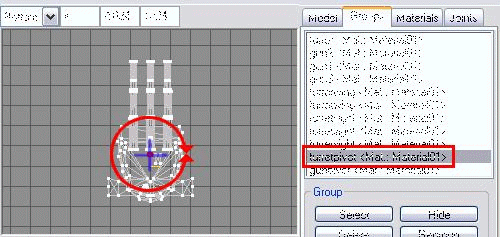
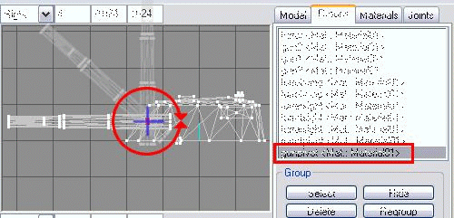
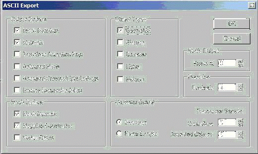

Scorched3D is exensible and allows new tank and missile models to be created. Modelling for Scorched3D is currently supported using either 3D studio max or milkshape. Milkshape is recommended as Scorched3D has better/fuller support for this format.
Milkshape
The first step in making a model for scorched in milkshape is to actually make
the model in milkshape. A userguide to milkshape is a little beyond the scope
of this article, but are available at other places online.
A note about textures at this point. Currently scorched3d only supports bitmap
(.bmp) textures.
These textures must also be square and have a resolution of a power of 2 (ie
16x16, 32x32, 64x64, 128x128, 256x256, 512x512, 1024x1024). Textures should be
kept in the same direcotry as the model (personally I like to place each
milkshape model and it's associated textures in a seperate directory). Also all
file names should be lowercase only, since scorched works on multiple file
systems and differeing file systems are case sensitive, the general rule of
thumb is to always keep filenames lowercase. Alpha textures are supported as
well, but must meet the above specifications. All objects in the model must be
textured, with the exception of the turretpivot and gunpivot objects (see
below).
Once you've completed the model you should start naming the seperate
components. All objects that name starts with "gun" are considered part of the
gun (ie gunBarrel, gunSight, gunlength), and all objects that name starts with
turret are considered part of the turret (ie turretCenter, turretTop,
turretWing). The turret rotates around the Y axis along with the gun, to
indicate rotation, and the gun rotates vertically to represent the elevation of
the shot.

TurretPivot

Gunpivot
Unless otherwise specified the gun and the turret rotate around the center of
the turret. If this isn't the desired behavior you can specify pivot points for
the gun and the turret. These pivots should be called "gunpivot" and
"turretpivot" repectively, these objects ARE NOT DRAWN and don't need to be
textured. All objects that start with "turret" are rotated around the center of
"turretpivot" object along with all objects that belong to the gun including
the gunpivot. All objects that start with "gun" are rotated around the
gunpivot.
Once you've completed these steps export the model (File>Export>Milkshape 3D
ASCII...), then tranfer you tank model directory to the scorced3d/data/tanks
directory.
Then open scorched/data/tanks.xml in a text editor (usually notepad) and place
an entry like this:
All paths in the tanks.xml file are relative to scorched/data/tanks so the above code assumes that your model is called mymodel and it's in a mymodeldir directory. If you want to make a category for your own models just place a category tag in the xml tag like this:<tank> <name>My Model</name> <model type="MilkShape">mymodeldir/mymodel.txt</model> </tank>
That's all there is to making a tank in Scorched3d.<tank> <name>My Model</name> <catagory>my category</catagory> <model type="MilkShape">mymodeldir/mymodel.txt</model> </tank>
3D Studio Max is supported via its ASCII export option (.ase files). To
properly export the models they must NOT have any matterials applied to any
face, then use these settings :-
